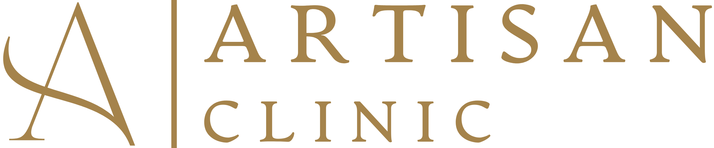
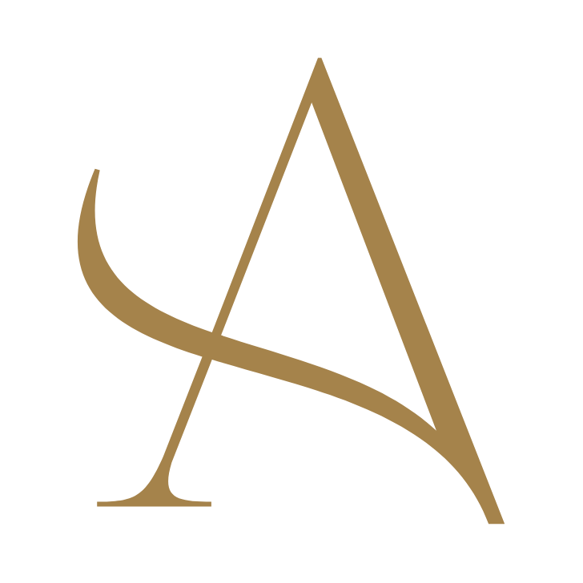

Kim jesteśmy
Artisan Clinic to klinika chirurgii plastycznej i medycyny estetycznej w Warszawie. Marka ma wyglądać tak, jak pracujemy: spokojnie, starannie i z dbałością o proporcje.
Skąd nazwa
Nazwa łączy sztukę i uzdrowienie. To w skrócie wszystko, co chcemy komunikować: piękno oparte na wiedzy medycznej.
Sztuka piękna. Precyzja leczenia.
Elegancka
Klasyczna forma, dużo wolnej przestrzeni, nic na pokaz.
Spokojna
Stonowane kolory i łagodny ton. Cisza zamiast krzyku.
Precyzyjna
Konkretne informacje, dbałość o detal, zero przesady.
Logo i sygnet
Logo to litera „A” (sygnet) i napis ARTISAN CLINIC. Zawsze używamy gotowych plików z tej strony.
Wersje logo




Sam sygnet





Sygnet stosujemy tylko tam, gdzie pełne logo byłoby za małe albo gdy nazwa kliniki pojawia się już obok (np. na profilu na Instagramie).
Zasady
Wolna przestrzeń wokół
Zostaw wokół logo pusty margines — co najmniej taki, jak wysokość napisu CLINIC (na rysunku: x). Ten margines zostaje pusty.
Minimalny rozmiar
Na ekranie logo ma co najmniej 120 px szerokości, w druku — 30 mm. Jeśli miejsca jest mniej, użyj samego sygnetu.
Ciepła paleta
Kolory przypominają papier, drewno i mosiądz. Kliknij dowolny kolor, aby skopiować jego kod — wklej go potem np. w Canvie, PowerPoincie czy Wordzie.
Kolory główne
Kolory uzupełniające
Ile którego koloru
Przewaga jasnego tła, bordo dla rytmu, mosiądz jak biżuteria — mało, ale widocznie.
Dobre połączenia
Trzy kroje, trzy role
Używamy trzech darmowych czcionek z Google Fonts. Znajdziesz je też w Canvie. Każda ma swoje zadanie.
ĄĆĘŁŃÓŚŹŻ 0123456789
Cinzel
Tytuły, nagłówki, hasła. Krój inspirowany rzymskimi napisami — elegancki i klasyczny.
Pobierz →Ąćęłńóśźż 0123456789
Cormorant Garamond
Cytaty, liczby, ceny, numery sekcji. Najładniej wygląda w kursywie.
Pobierz →ĄĆĘŁŃÓŚŹŻ 0123456789
Montserrat
Zwykły tekst, opisy, przyciski, menu. Do tekstu — odmiana Light (cienka), do przycisków — Regular.
Pobierz →Jak to wygląda razem
Zacznijmy od rozmowy
Wszystkie terminy dostępne są w rezerwacji telefonicznej. Wybrane terminy można zarezerwować online.
Od przeszło dwudziestu lat prowadzi własną praktykę lekarską.
Zasady
- Krótkie nagłówki — najlepiej do sześciu słów.
- Wyróżnienie kursywą — jedno słowo w nagłówku.
- Wielkie litery tylko w krótkich etykietach i przyciskach, zawsze z odstępami.
- Dużo powietrza — wolna przestrzeń wokół tekstu to część stylu.
Przyciski i detale
Kilka powtarzalnych elementów sprawia, że materiały od razu wyglądają „jak Artisan”. Najedź na przyciski, żeby zobaczyć, jak reagują. Detali używaj oszczędnie.
Przyciski i linki
Na jasnym tle
Ciemny przycisk to główne działanie. Obok — co najwyżej jeden przycisk z obramowaniem.
Na ciemnym tle
Na bordo lub zdjęciu przycisk jest jasny, a drugi — z jasnym obramowaniem.
Przycisk bordo i link
Na kaszmirze przycisk jest w kolorze bordo. Mniej ważne działania to podkreślony link.
- Napis na przycisku zaczyna się od czasownika: Umów, Zobacz, Poznaj, Zadzwoń.
- Strzałka → tylko przy najważniejszym działaniu w danym miejscu.
Detale
Etykieta z kreską
Mały napis nad nagłówkiem, poprzedzony cienką kreską. Mówi, o czym jest sekcja.
Numeracja
Numery „01, 02, 03” porządkują treść — jak rozdziały w książce.
Gwiazdka ✦
Ozdobny separator między słowami. Zawsze w kolorze mosiądzu.
Cienka linia
Linie mają 1 px grubości — mosiężne albo bardzo jasne.

Przesunięta ramka
Cienka mosiężna ramka lekko przesunięta za zdjęciem. Raz na stronę.
Etykiety zabiegów
Proste prostokąty z cienkim obramowaniem.
Ciepło i naturalnie
Zdjęcia są jasne, ciepłe i spokojne. Pokazujemy ludzi, miejsce i detal — tak, żeby pacjent poczuł atmosferę kliniki, zanim do niej przyjdzie.


Zasady
- Naturalne, miękkie światło dzienne.
- Ciepłe, stonowane barwy: beże, pudrowy róż, drewno.
- Spokojne kadry z dużą ilością wolnego miejsca.
- Wysoka jakość — ostre zdjęcia, dobra rozdzielczość.
Jak mówimy
Mówimy jak doświadczony lekarz, któremu się ufa: spokojnie, konkretnie i z szacunkiem. Opisujemy metodę, przebieg i opiekę.
Przykłady
Zacznijmy od rozmowy.
Przywrócić proporcje, nie zmienić twarzy.
Ostateczna wycena ustalana jest podczas konsultacji.
Zasady pisania
- Krótkie, spokojne zdania.
- Konkretnie — co, jak, gdzie i kto.
- Z szacunkiem — mówimy o pacjentach.
- Po polsku — fachowe nazwy zabiegów krótko wyjaśniamy.